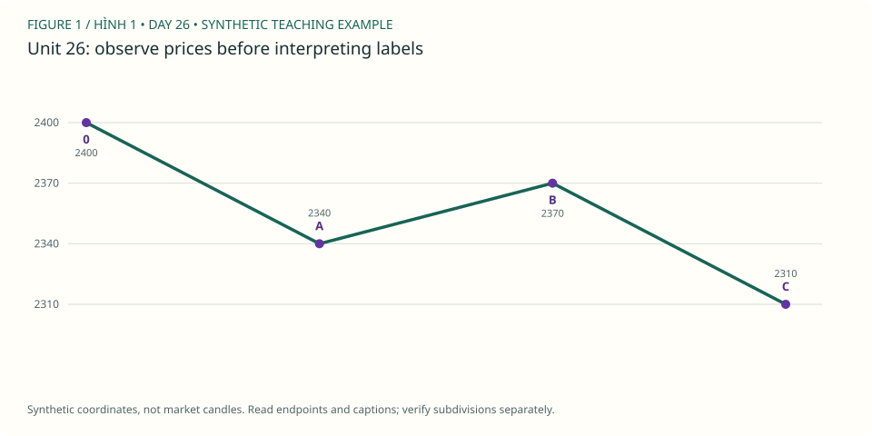

PDF CURRICULUM · UNIT 26 / 30
Kế hoạch wave C / Prepare during B
chỉ xây C plan khi hiểu dạng correction và parent context.
← Roadmap · Unit trước · Unit tiếp
1. Học và ví dụ theo unit / Study
- Đọc: PDF 82–83, 88–89, ví dụ trang91–92.
- Mục tiêu: chỉ xây C plan khi hiểu dạng correction và parent context.
- Nguyên lý: A motive trong zigzag; B chưa chắc xong; signed projection; stop/source conventions; countertrend risk.
- Ví dụ mới: A2400→2340, B2370; equality C=2310. Entry2365, stop2402 cho gross R55/37≈1,49.
- Bài tập: equality đẹp có làm R tốt hơn không? Nếu A là ba sóng thì giả thuyết nào phải xem lại?
- XAUUSD: 3 C plans, ghi trước reveal cả khả năng correction tiếp tục.
- Nộp/đạt: 3 plans, không đồng nhất mọi A–B–C với 5–3–5.
Đọc hình gốc & trả lời trên chart / Source-chart lesson
Kế hoạch wave C: vùng B, stop và target · Steve Sinclair, Elliott Waves Made Simple, Image 63, PDF p.89. Mở trang gốc / Original page
- Quan sát / Observe: Kế hoạch C được chuẩn bị sau B; hình cho nhiều entry cùng một hypothesis. / Multiple entries share the same wave C hypothesis.
- Suy luận / Reason: Cần xác định correction family và internals A/B; không mua/bán chỉ vì thấy chữ B. / Establish the corrective context first.
- Giới hạn / Limit: Các lệnh cùng ca phải chia tổng cash budget; không nhân đôi risk chỉ vì có hai entry. / Two entries do not imply two independent risk budgets.
Ảnh trích từ PDF bạn cung cấp, giữ nhãn gốc để học cách đọc; không phải dữ liệu MT5 của lab. Bấm vào điểm giá/đỉnh/đáy được hỏi (không bấm chữ nhãn), rồi “Kiểm tra”. Mỗi câu có hình riêng để lưu hai điểm độc lập. / Click the requested endpoint, not the label text; each question has its own saved point.
Câu hình 1 / Image question 1
Bấm endpoint B nơi chuẩn bị tham gia C. / Locate B, where the C plan is prepared.
Chưa chọn điểm / No point selected.
Câu hình 2 / Image question 2
Bấm endpoint C dự phóng ở đáy đường sơ đồ. / Locate the projected C target.
Chưa chọn điểm / No point selected.
Chấm tọa độ trong vùng dung sai quanh endpoint được hỏi, không tự xác nhận cấu trúc Elliott hay hiệu quả giao dịch. Dùng trường X/Y nếu không thao tác chuột; gốc tọa độ ở góc trên trái. Lưu trả lời hoặc export để giữ điểm, lời giải và nguồn hình.
Sơ đồ giả định bổ sung / Additional synthetic sketch

Sơ đồ giá giả định: đọc cùng ví dụ của bài. P là điểm quan sát, không là số sóng Elliott. Không mô tả RSI, contract size hoặc kết quả giao dịch từ đường giá này.
Quy tắc, guideline và lưu ý nguồn · Cách làm và rubric bài vẽ
2. Trắc nghiệm / Multiple-choice practice
6 câu chọn đáp án, có giải thích sau khi chấm; 4 nhiệm vụ tự luận/vẽ bên dưới. Đây là luyện tập offline, không phải bài thi chống xem đáp án.
Chưa chấm / Not graded.
3. Bài vẽ của unit 26 / Draw here
Nhiệm vụ: 3 C plans, ghi trước reveal cả khả năng correction tiếp tục.
Giải thích cần nộp: equality đẹp có làm R tốt hơn không? Nếu A là ba sóng thì giả thuyết nào phải xem lại?
Starter window: XAUUSDm H1, 2024-02-01 00:00:00 → 2024-02-07 03:00:00. Ban đầu 48/96 nến. Cửa sổ có thể không chứa pattern yêu cầu; ghi no-count và dùng lịch sử rộng hơn, không ép nhãn để đạt quota.
data/Mt5Data/XAUUSDm_H1_202101030000_202609250000.csv · server-time offset unknown · không resample. Từng unit có nguồn/window identity riêng.
Chọn wick bắt đầu (low cho nhịp tăng, high cho giảm), rồi bấm lần lượt trên chart hoặc chọn nến và “Thêm điểm”. Tắt tự chuyển nhãn khi vẽ W–X–Y, nhiều degree hoặc swing riêng. Giá neo đúng wick thật, không kéo đến giá tùy ý.
Giới hạn: diagonal, complex/running/expanding triangle và policy giao dịch cần nhận xét thủ công; dùng swings thay vì ép chúng qua checker impulse. Mode triangle chỉ kiểm tra nhãn/thứ tự và các chân quan sát, không chứng nhận hình học, biến thể hay internals. Chưa biết executable bid/ask, timezone offset hoặc broker specs. OHLC không chứng minh fill hay lợi nhuận.
Daily / H4 / H1 cùng mốc quan sát
Đo các điểm đã chọn / Measure anchors
2 điểm: retracement; 3 điểm: projection; 6 điểm: độ dài 1/3/5. Không dùng kết quả đo để cứu count sai.
Gửi JSON và SVG vào chat để được nhận xét. Không tự upload. JSON gồm đúng nến đang thấy, endpoints, journal và câu trả lời; giữ bản gốc trước khi sửa.
OHLC và các nhãn đã vẽ
| Timestamp | Open | High | Low | Close | Labels |
|---|
Ví dụ pivot quan sát — không phải đáp án bài vẽ
Các P-pivot và candidate bên dưới được chọn hậu nghiệm trong 48 nến đầu, không chứng nhận đúng pattern của unit này. Giữ đóng cho đến khi bạn tự vẽ.
4. Tự luận, nộp bài và sửa / Written review
Tiêu chí tự đối chiếu — làm trước khi mở
không; cần xét flat/complex/unknown thay vì mặc định zigzag.
Đối chiếu đúng source, wick và cutoff; kiểm tra hard rules; alternatives/internals có thể cần người đọc chart. Không chấm bài vẽ bằng điểm trắc nghiệm hoặc hướng giá sau đó.
Đạt bài: 3 plans, không đồng nhất mọi A–B–C với 5–3–5.. Trắc nghiệm ≥5/6 chỉ là checkpoint; 4 bài tự luận/vẽ cần đánh giá theo rubric (≥16/20, không lỗi nghiêm trọng), không tự chứng nhận hoàn thành.
Workbook mới tách biệt khóa cũ. Lưu câu trả lời trước khi rời bài; lỗi lưu sẽ hiện rõ, hãy export nếu browser không lưu được.